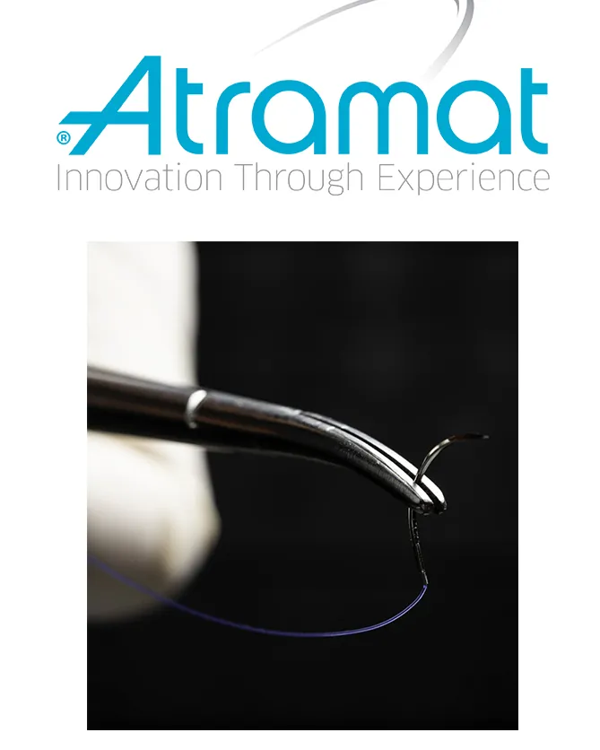
Atramat
Suturas quirúrgicas
Elige una o varias marcas para ver sus líneas. Todas son representadas en Panamá por Solis Import S.A.

Suturas quirúrgicas
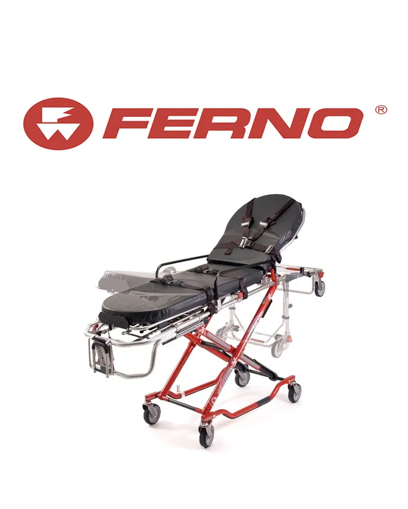
Atención de emergencias
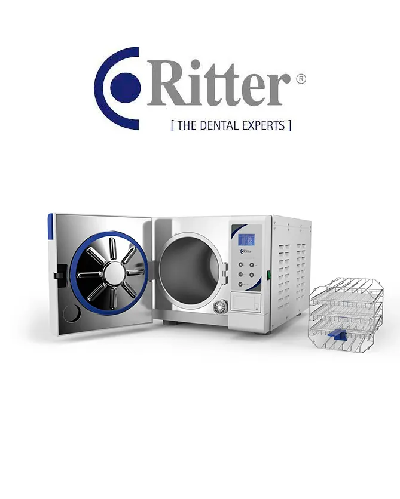
Odontología
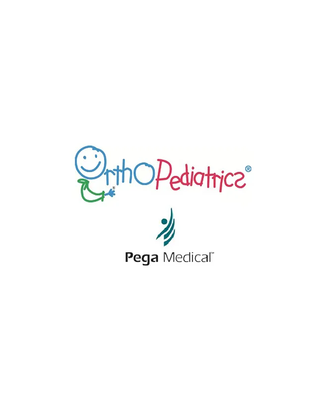
Ortopedia pediátrica
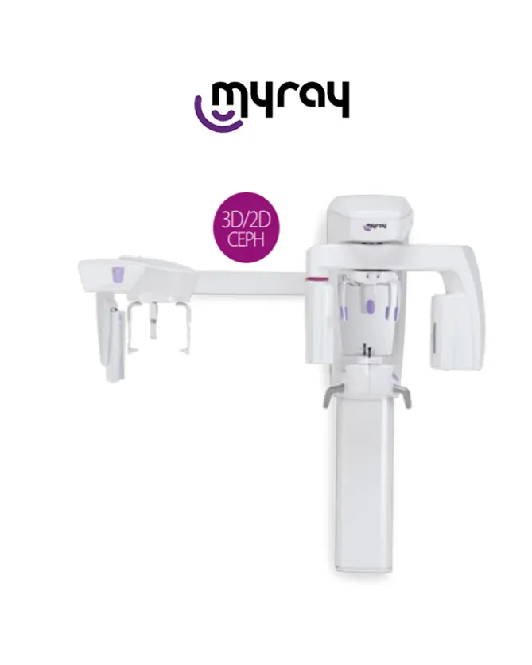
Radiología dental
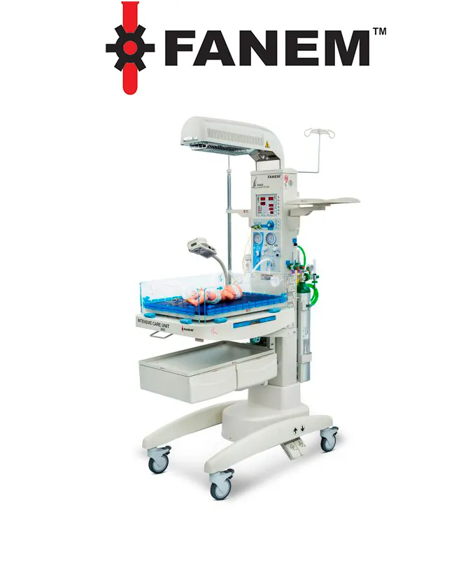
Neonatología y hospitalario
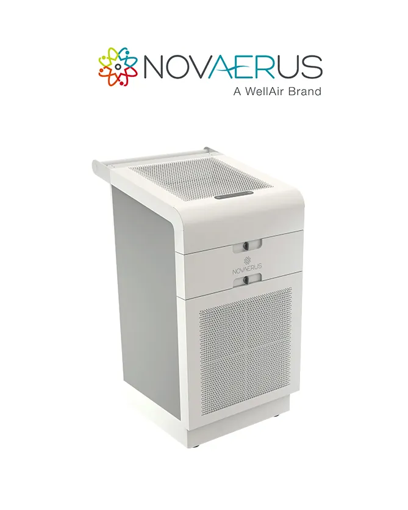
Desinfección de aire
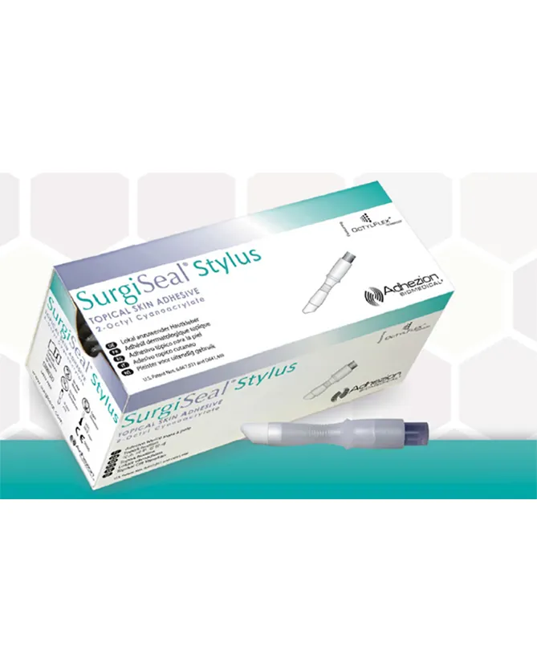
Cierre de heridas
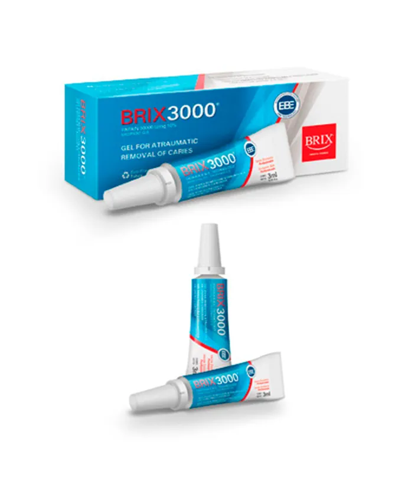
Odontología
Insumos respiratorios y cuidado de heridas
Análisis de la marcha
Láseres dentales y médicos
Adhesivos médicos
Rehabilitación y fisioterapia
Doppler fetal y oximetría
Ortesis, prótesis y cuidado de presión
Espirometría y oximetría
Control de infecciones e higiene
Imagen dental digital
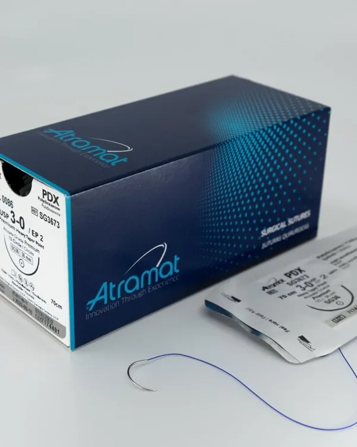
Atramat · Suturas
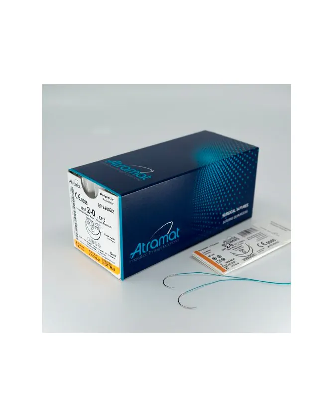
Atramat · Suturas
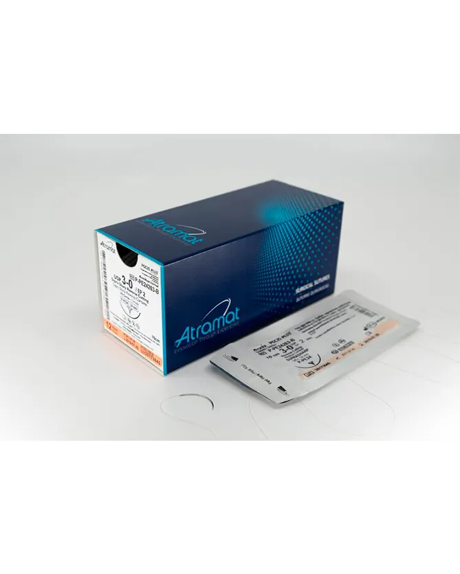
Atramat · Suturas
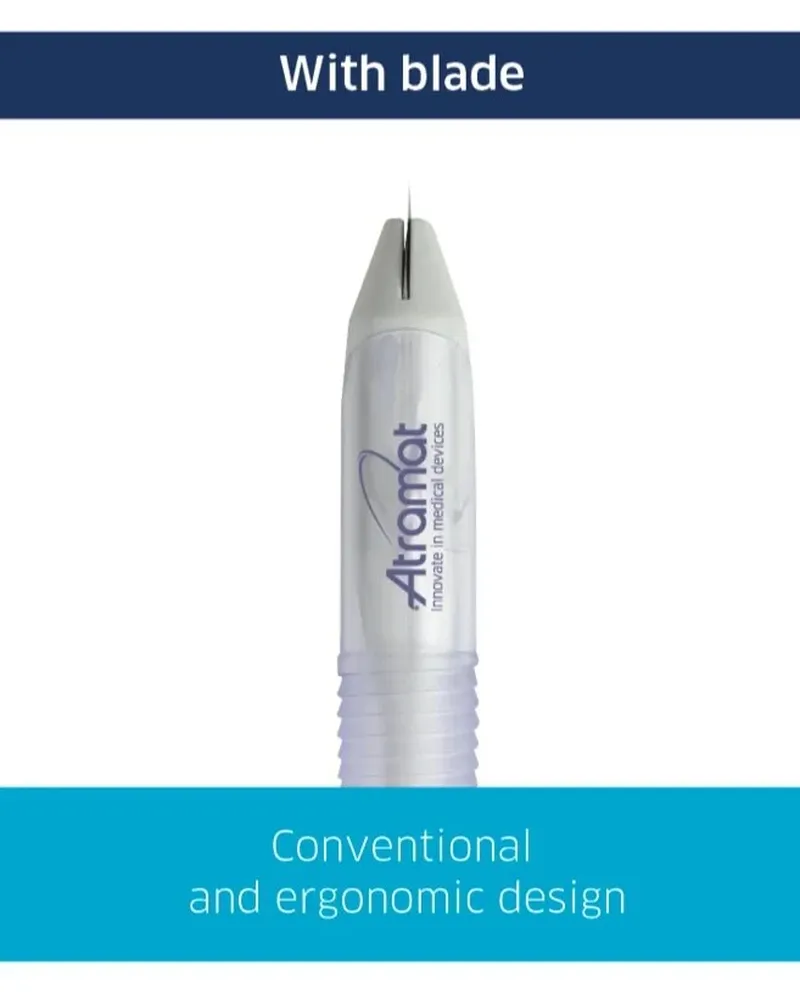
Atramat · Laparoscopía
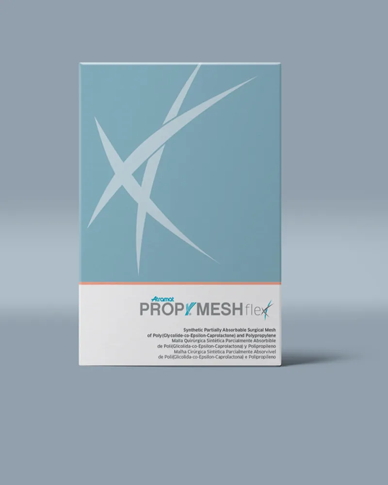
Atramat · Malla quirúrgica

Atramat · Agujas
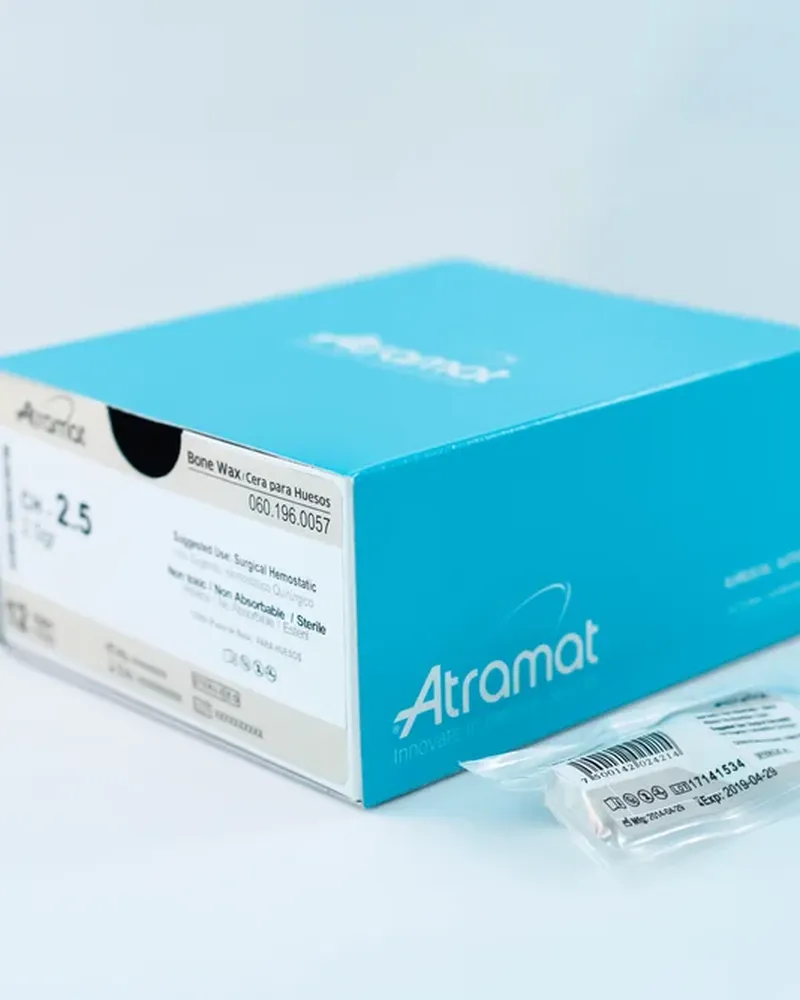
Atramat · Hemostasia
Prueba con otra marca o escríbenos y te ayudamos a encontrar lo que necesitas.